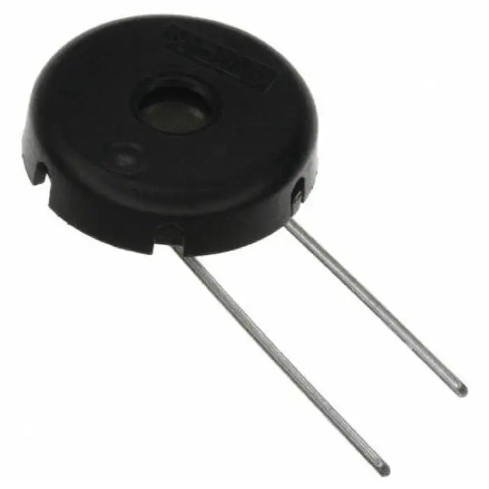

Les buzzers électro-mécaniques
Qu'est ce qu'un buzzer électro-mécanique ?

Le buzzer électro-mécanique est une sous-catégorie spéciale du buzzer électromagnétique, qui se compose d'un oscillateur, d'une bobine électromagnétique, d'un aimant et d'un boîtier.
Le buzzer mécanique est toujours avec une forte impédance, la résistance à DC est infinie, l'impédance AC est également un très grand appareil sonore à bande étroite,
généralement en céramique piézoélectrique. Besoin d'une plus grande tension pour conduire, mais le courant est très petit,
juste quelques mA et la puissance est également très petite.